Program Security: Malware
Z. Cliffe Schreuders


This content and code (including slides CSS, HTML, and JS) by Z. Cliffe Schreuders is dual licensed under a Creative Commons Attribution-ShareAlike v4.0 International License and GNU Affero General Public License v3.
Lecture recordings are published on the VLE and YouTube.
The problem
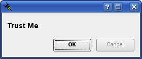- Programs do not always act in the best interests of the users that run them
- However, often end users are forced to trust that applications are acting correctly
Programs behaving badly
- Malware: Malicious Software
- Author intends for the program to act maliciously
- Vulnerable software: software with vulnerabilities
- Design or implementation bugs can be exploited by attackers
Malware
- A long held assumption (which is increasingly being questioned):
“If a bad guy can persuade you to run his program on your computer, it's not your computer anymore”
-
– Microsoft, “TechNet Essay: 10 Immutable Laws of Security”
Malware
- If an attacker wants to do malicious things, and the malicious program is running with all of the users privileges, then the attacker basically has the power to use those privileges for whatever they please
- The attacker just need some way of getting malware onto the systems of end users
Malware
- Malware typically does:
- Replication – spreading the infection
- Executes a malicious payload – making use of its access to do something
- Types of malware can be categorised based on the way it spreads, or the payload...
Viruses
- Viruses: copy themselves into executables
- May copy itself into programs, documents (macro virus), or boot sectors of removable storage media
Worms
- Worms: copy themselves to other computers
- From each infected computer
- Via automated email, or vulnerabilities

by versageek
History: Morris Worm
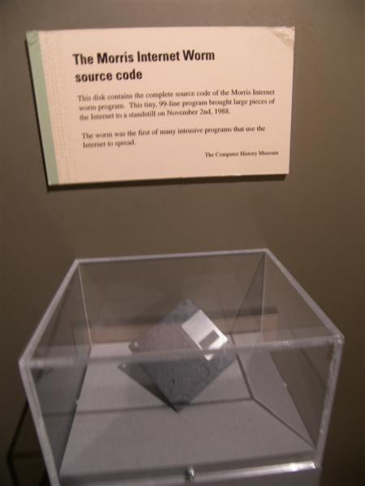- The Morris Worm (one of the first, 1988), had no malicious payload, it just spread via Unix software vulnerabilities and weak passwords
- It reinfected the same computers, causing them to be overwhelmed with processes and caused major disruption to the Internet
Image Museum of Science - Morris Internet Worm by Go Card USA
History: Blaster Worm
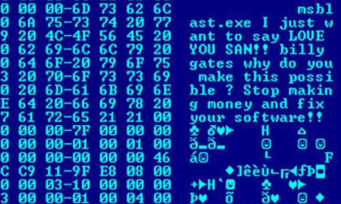- The Blaster Worm spread between Windows XP and 2000 systems
- Exploited the DCOM RPC buffer overflow
- Created by reverse engineering the vulnerability from a patch from Microsoft
- Designed to DDoS windowsupdate.com within a particular date range
{kind=link}
Trojans
- Trojan Horses: pose as legitimate software
- Does something covertly malicious
- For example, remote access trojans (RAT)
- Can spread via social engineering, or man-in-the-middle attacks
- Lots of software is obtained via insecure means (HTTP)

by ccarlstead
Trojans: on Windows
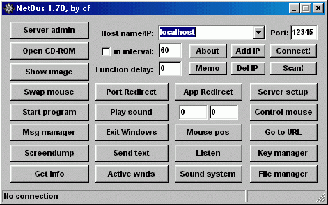 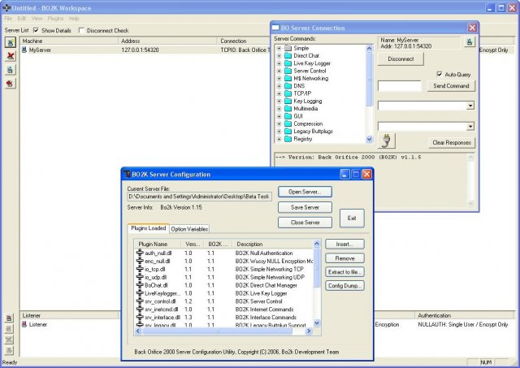- A history lesson, Trojans on Windows:
- Netbus
- Back orifice
- Server can be bundled with a legitimate looking program that is also executed
EXE wrappers
- Bind one program to another
by mjuhah
Rootkits
- Rootkits: hide the presence of infection. For example, programs may not report certain suspicious processes that are running.
by misko13
Zombies and Botnets
- Zombies: computers that have been infected with malware that receive commands from remote systems, and often act as part of a collection of zombies, known as a botnet.
by Grmisiti
Zombies and Botnets: networks
- Command and control servers
- Decentralised peer-to-peer networks
- TOR
by Grmisiti
Spyware and Adware

- Spyware tracks the victim
- For example, keyloggers
- May collect personal information, such as credit card numbers
- May be used for identity theft
- Adware displays unwanted advertising
Scareware and rogue antivirus
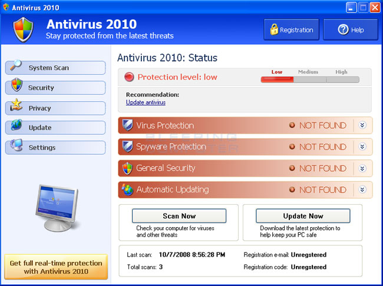 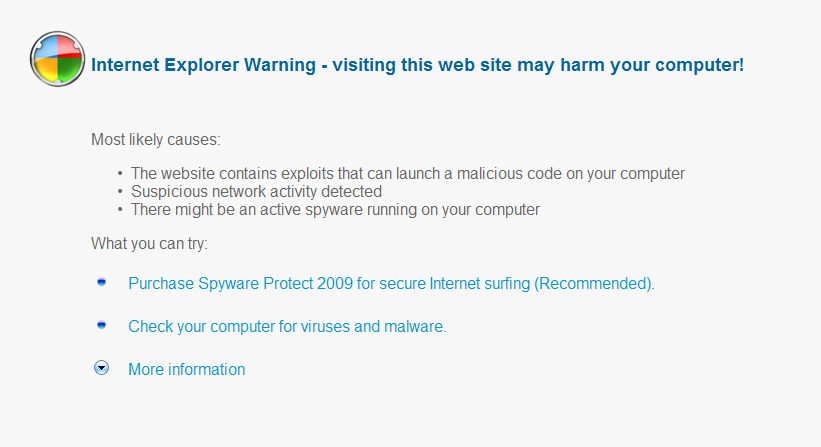- Fake security software, scares the victim into installing malware and paying the attacker
Ransomware
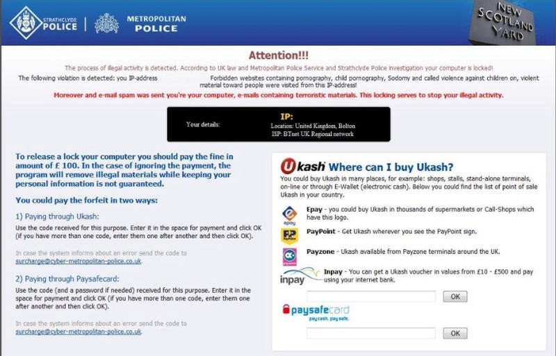- Ransomware extorts money from victims
- Typically locks access to a computer or to files and demands a payment to regain access
- May also claim to have detected illegal activity on the computer
Ransomware: Cryptolocker
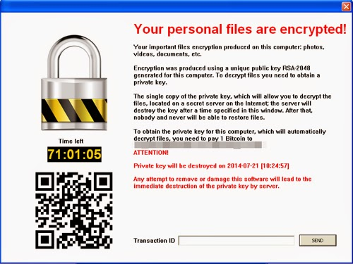- An example of ransomware is Cryptolocker (2013), which encrypts files, and demands payment via Bitcoin
- US$27 million in BTC
- Private keys were
recovered when
the Gameover ZeuS
botnet was taken
down
Drive-by
- Drive-by downloads – unwanted software downloads / installation
- Watering hole attacks – malware placed on sites that are visited by their victims
Exploit kits
- Web exploit kits are prepackaged malware servers that deliver exploits in an attempt to exploit victims' browsers and other client software
- A large number of exploits, targeting browser flaws, Flash, Java, PDF viewers, and so on
- Installs a malicious payload (any kind of malware, often a zombie to join a Botnet)
- Attackers have a slick control panel interface
- Malware developers sell access to exploit kits, including leases and hosting, and are even marketed to attackers
Exploit kits: Black hole
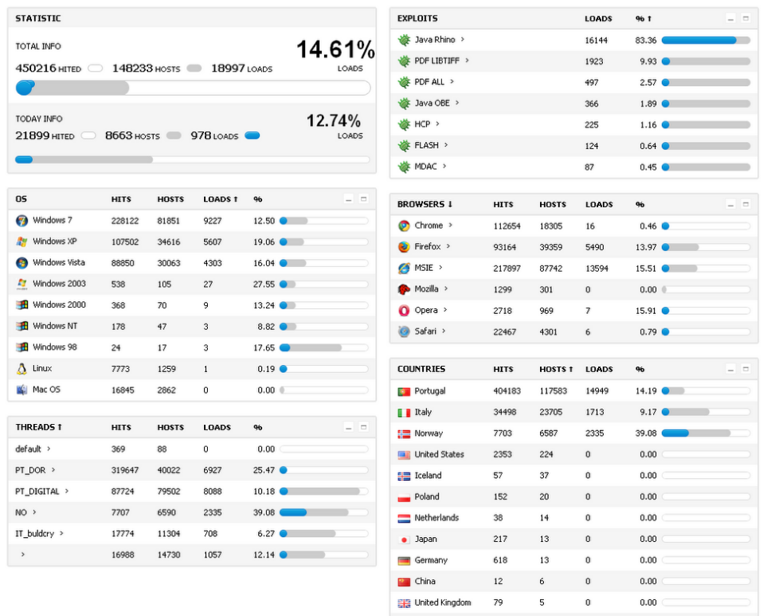Image by Xylit0l
Exploit kits: Black hole
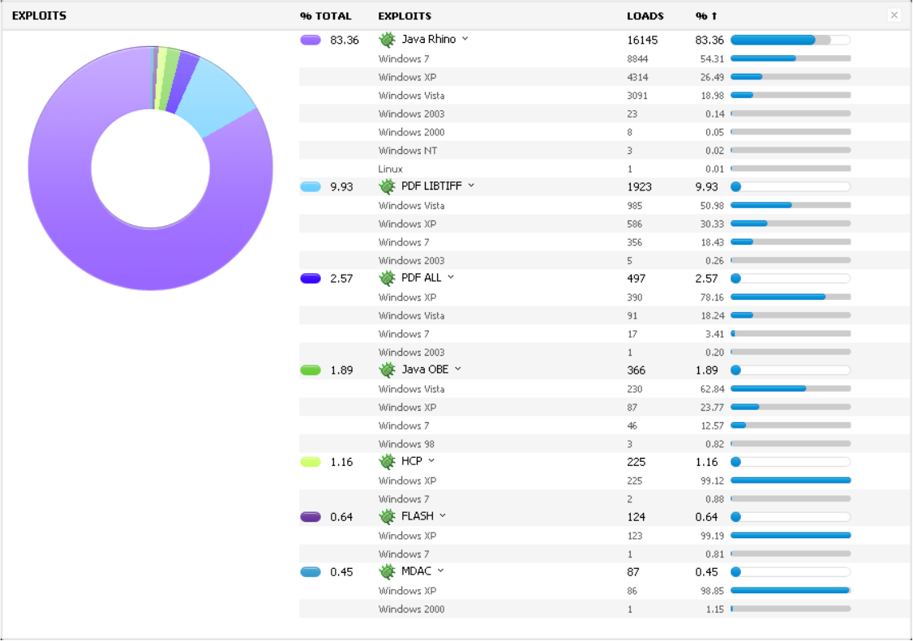Image by Xylit0l
Banking trojans
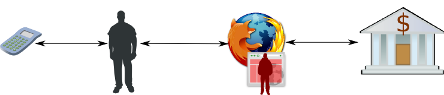- Banking trojans focus on stealing banking information
- For example, Zeus can perform man-in-the-browser attacks to copy or modify bank transactions
- Also can perform many other malicious activities
Organised crime
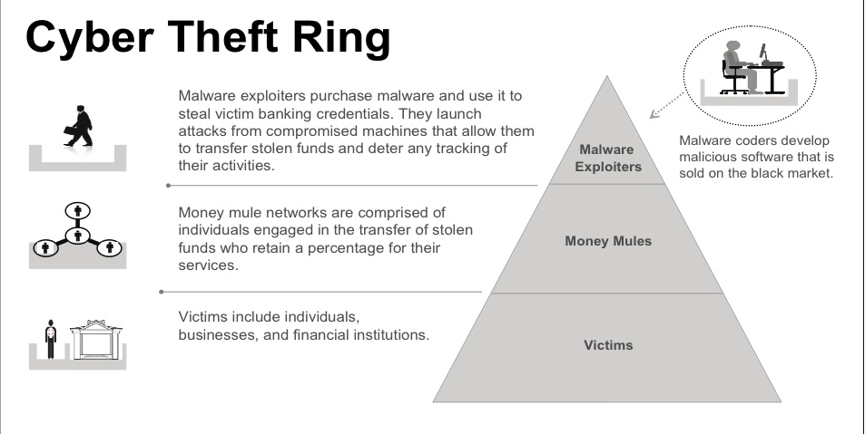{kind=link}
Organised crime
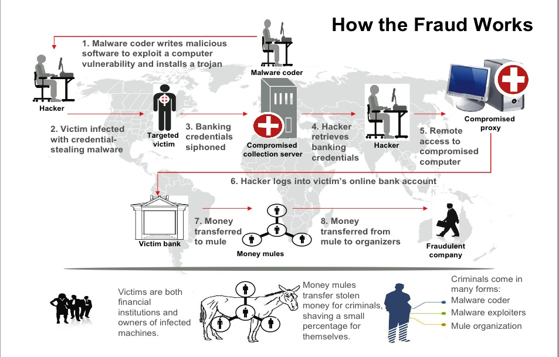Organised crime
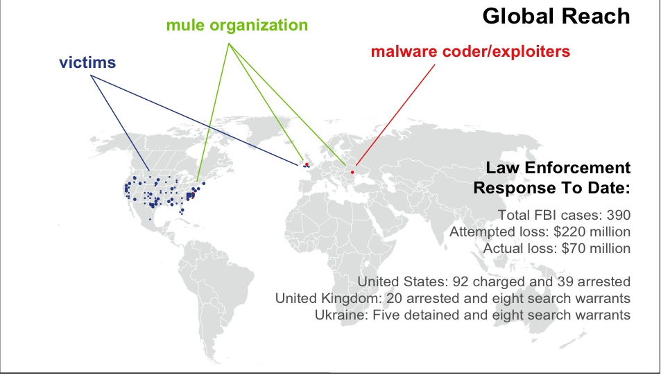Sources of software
- Discuss: Where do you get software from? How do you know who to trust?
- Software authors?
- Websites/repositories that provide software?
- How do you know they really are who they claim to be?
- Digital signatures and certificates
User accounts and access controls
- Programs are subject to access controls
- Unix has somewhat stronger protection than early Windows systems, since normal users have less privileges
- Unix can still be attacked, since even with “just” the users privileges lots of damage can be done:
- Web history, personal documents
- Discuss: what else?
- However, we must protect root at all costs
Traditional Mitigation
- Trust-based selective execution
- Only run programs that you trust
- Blacklist: Try to detect if there are programs that you really dont trust
- Whitelist: Only run the programs that you really do trust
by Incase.
Signature-based detection
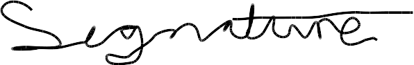- Blacklist: Signature-based detection
- Analyse the contents of executables and detect known malware
- Discuss: why will this always be one step behind attackers?
- In its simplest form may simply hash the program
- MD5, SHA-1, ...
- May attempt to detect variants using “fuzzy hashing”
Anomaly-based detection
- Blacklist: Anomaly-based detection
- Monitor system calls (the way programs talk to the OS) or other API, and detect unusual behaviour
- Prone to false positives. For example, if the program starts being used differently
- False negatives: the program may attempt to look like it is doing legitimate things
Digital signatures
- Digital signatures (Often for whitelisting)
- Identifies and authenticates the author or distributer of the software
- Eg: Microsoft AppLocker, and Microsoft Software Restriction Policies (SRP), Apple AppStore, Linux software repositories
- ActiveX controls (native code embedded in web pages) used this approach, and resulted in many security incidents, since people tend to click “OK”
Reputation-based security
- Relatively new technique that uses information collected from a large number of users to make judgements about the likely trustworthiness of software
- How many other people are using it?
- Discuss: what about new software?
No restrictions
The bad news
- All of these approaches often fail
- Digital signatures and certificates have failed to accurately reflect the actual origin of programs (Verisign once sold a Microsoft code signing certificate to a still unknown third party)
- Blacklist techniques fail to detect most zero-day (new) malware... Imagine a targeted attack
Stuxnet...
- Discovered in 2010
- A worm that spread remotely via a number of zero-day vulnerabilities in Windows, and infects USB drive contents
- Installs as a Windows rootkit (that is, it hides its presence from the OS)
- Then goes on to attack specific SCADA configurations (systems that control industrial machinery)
Stuxnet
- Extremely complex and sophisticated
- Many believe it to be targeted at Iranian nuclear facilities, and may have been the cause of serious technical problems
- Possible origins: Iranian government official claims it was Israel and USA governments
- Cyberwar?
Sandboxing
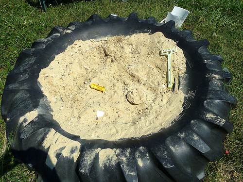- Restrict what the program is allowed to do
- Huge improvement
- Who defines the policy (what is allowed)?:
- The author
- The distributor
- The user
- Is becoming more used (mobile devices)
- Can solve many issues, but has not solved the problem completely (malware on Android)
by krossbow
Conclusion
- Malware and software vulnerabilities are two of the most common computer security threats
- In both cases attackers are often able to run malicious code in the context of a process running as an end user (or in worst cases the context of kernel code)
- This can be considered an identity problem, since the program is not necessarily acting for the associated identity and privileges
by Tim Evanson
Recommended reading
- Text book: Chapter 23 “Protecting Against Programmed Threats”: Garfinkel, S. & Spafford, G. & Schwartz, A. (2003), Practical Unix & Internet Security, O'Reilly. (ISBN-10: 0596003234)Available online via the library: http://www.dawsonera.com.ezproxy.leedsmet.ac.uk/depp/reader/protected/external/AbstractView/S9781449310325
- Charles P. Pfleeger and Shari Lawrence Pfleeger, Security in Computing, Section 3.3. Viruses and Other Malicious Code
- Matt Bishop, Introduction to Computer Security, Chapter 19. Malicious Logic